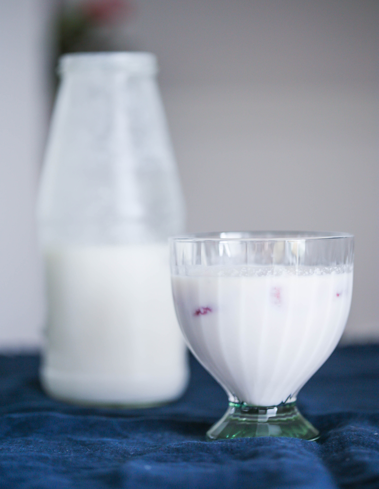

Также можно оставить кефир на вторичную ферментацию, со вкусовыми добавками. В бутылку с готовым кефиром добавить кусочки фруктов, специи или другую добавку на ваш вкус (около 10% от общей массы кефира), плотно закрыть крышку и оставить ферментироваться при комнатной температуре на 1-24 часа или дольше по вашему вкусу. Хранить в холодильнике.
Помните, что чем дольше стоит кефир, тем кислее он становится и тем больше в нем газа.
Если вы хотите отдохнуть от кефира или вам нужно уехать на неделю, можно ферментировать кефир в холодильнике. Для этого нужно смешать свежее молоко с кефирными зернами, плотно закрыть и сразу поставить в холодильник, не оставляя его при комнатной температуре. В холодильнике кефир будет готов примерно за 7-8 дней. После этого нужно отделить готовый напиток от кефирных зерен, как описано выше.
Кефирные зерна постепенно размножаются и растут, увеличиваясь в объеме, так что со временем вам понадобится куда-то девать излишки. Это можно сделать, как описано выше: поместить дополнительные зерна в банку с молоком и хранить в холодильнике с закрытой крышкой, меняя молоко по мере необходимости, как только оно превратится в кефир.
Если вам нужно уехать на 3-4 недели, налейте молока в самую большую банку, которая помещается в холодильник, и опустите в нее все кефирные зерна. Плотно закройте банку и оставьте в холодильнике на 3-4 недели. Так как еды, то есть молока, очень много, на его сквашивание у кефирных зерен уйдет больше времени.
Для более долгого хранения кефирные зерна можно заморозить. Для этого промокните их бумажным полотенцем, если есть – присыпьте сухим молоком в порошке, если нет, оставьте так. Положите в пластиковый пакет с застежкой зип-лок и заморозьте на 2-3 месяца. Чтобы оживить, положите замороженные зерна в молоко и следуйте инструкциям выше. Первую порцию выкиньте, из второй уже получится вкусный кефир.